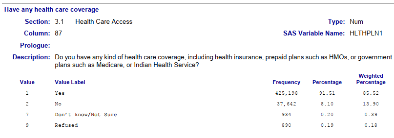

BFRSS - Transgender questions
Transgender
A common definition of the word transgender is that they are people who have a gender identity or gender expression that differs from the sex that they were assigned at birth. However, the term transgender does not have a universally accepted definition, including among researchers.
This exercise is based on: Harris, Statistics With R: Solving Problems Using Real-World Data, 1e SAGE Publishing, 2021.
The BRFSS
The Behavioral Risk Factor Surveillance System (BRFSS) is a United States health survey that looks at behavioral risk factors. Begun in 1984, the BRFSS is run by Centers for Disease Control and Prevention (CDC ) and conducted by participating individual state health departments. The survey is administered by telephone and is the world’s largest such survey. In 2009, the BRFSS began conducting surveys by cellular phone in addition to traditional “landline” telephones.
In addition to all 50 states, the BRFSS is also conducted by health departments in The District of Columbia, Guam, Puerto Rico, and the U.S. Virgin Islands. Individual states can add their own questions to the survey instrument, which consists of a core set of questions on certain topics like car safety, obesity, or exercise.
In 2014, CDC introduced an optional Sexual Orientation and Gender Identity module for the BRFSS.
Libraries
Import transgender file with demographics
bfrss_trans <- read_csv(here("Exercises","data","transgender_hc_ch2.csv"))Rows: 464664 Columns: 9
── Column specification ────────────────────────────────────────────────────────
Delimiter: ","
dbl (9): TRNSGNDR, X_AGEG5YR, X_RACE, X_INCOMG, X_EDUCAG, HLTHPLN1, HADMAM, ...
ℹ Use `spec()` to retrieve the full column specification for this data.
ℹ Specify the column types or set `show_col_types = FALSE` to quiet this message.dim(bfrss_trans)[1] 464664 9summary(bfrss_trans) TRNSGNDR X_AGEG5YR X_RACE X_INCOMG
Min. :1.00 Min. : 1.000 Min. :1.000 Min. :1.000
1st Qu.:4.00 1st Qu.: 5.000 1st Qu.:1.000 1st Qu.:3.000
Median :4.00 Median : 8.000 Median :1.000 Median :5.000
Mean :4.06 Mean : 7.822 Mean :1.992 Mean :4.481
3rd Qu.:4.00 3rd Qu.:10.000 3rd Qu.:1.000 3rd Qu.:5.000
Max. :9.00 Max. :14.000 Max. :9.000 Max. :9.000
NA's :310602 NA's :94
X_EDUCAG HLTHPLN1 HADMAM X_AGE80
Min. :1.000 Min. :1.000 Min. :1.00 Min. :18.00
1st Qu.:2.000 1st Qu.:1.000 1st Qu.:1.00 1st Qu.:44.00
Median :3.000 Median :1.000 Median :1.00 Median :58.00
Mean :2.966 Mean :1.108 Mean :1.22 Mean :55.49
3rd Qu.:4.000 3rd Qu.:1.000 3rd Qu.:1.00 3rd Qu.:69.00
Max. :9.000 Max. :9.000 Max. :9.00 Max. :80.00
NA's :208322
PHYSHLTH
Min. : 1.0
1st Qu.:20.0
Median :88.0
Mean :61.2
3rd Qu.:88.0
Max. :99.0
NA's :4 Objective of the analysis
The report will analyze transgender responses in the 2014 BFRSS. The main variables are transgender, age, race, income, education categories, and physical health. The analysis will be mostly descriptive.
Initial columns
We’ll focus on the first 3 transgender replies:
1 = Male to female 2 = Female to male 3 = Gender non-conforming
Here are codebook extracts for the other variables:

Transgender groups and their frequencies
bfrss_trans1 <- bfrss_trans %>%
filter(TRNSGNDR %in% c(1:3)) %>%
mutate(
TRNSGNDR = recode_factor(
.x = TRNSGNDR,
`1` = 'Male to female',
`2` = 'Female to male',
`3` = 'Gender non-conforming',
))
descr::freq(x = bfrss_trans1$TRNSGNDR, plot = FALSE)bfrss_trans1$TRNSGNDR
Frequency Percent
Male to female 363 52.53
Female to male 212 30.68
Gender non-conforming 116 16.79
Total 691 100.00Gender variance or gender nonconformity is behavior or gender expression by an individual that does not match masculine or feminine gender norms.
Female to male transgender and mammography
bfrss_trans_hadmam <- bfrss_trans1 %>%
filter(TRNSGNDR == 'Female to male') %>%
#filter(X_AGEG5YR %in% c(5)) %>%
filter(HADMAM %in% c(1,2)) %>%
mutate(HADMAM = recode_factor(.x = HADMAM,
`1` = 'Yes',
`2` = 'No',
))
descr::freq(x = bfrss_trans_hadmam$HADMAM, plot = FALSE)bfrss_trans_hadmam$HADMAM
Frequency Percent
Yes 131 82.39
No 28 17.61
Total 159 100.00The question asks if the individual ever had a mammogram and 82.39% of female to male transgenders from 40 to 74 years of age had at least one.
When the focus is on the 40-44 age group, the response rate drops to 69.23%.
Physical health
The question was about the number of days in the last 30 days the respondent wasn’t feeling good.
bfrss_trans1 <- bfrss_trans %>%
filter(TRNSGNDR < 4) %>%
mutate(
TRNSGNDR = recode_factor(
.x = TRNSGNDR,
`1` = 'Male to female',
`2` = 'Female to male',
`3` = 'Gender non-conforming',
)) %>%
mutate(
PHYSHLTH = replace(PHYSHLTH, PHYSHLTH %in% c(77, 99), 99),
PHYSHLTH = replace(PHYSHLTH, PHYSHLTH == 88, 0)) %>%
filter(PHYSHLTH != 99)
descr::freq(x = bfrss_trans1$PHYSHLTH, plot = FALSE)bfrss_trans1$PHYSHLTH
Frequency Percent
0 391 58.8855
1 28 4.2169
2 41 6.1747
3 22 3.3133
4 17 2.5602
5 20 3.0120
6 3 0.4518
7 13 1.9578
8 2 0.3012
10 12 1.8072
14 10 1.5060
15 11 1.6566
16 1 0.1506
18 2 0.3012
20 8 1.2048
21 4 0.6024
24 1 0.1506
25 4 0.6024
28 3 0.4518
29 3 0.4518
30 68 10.2410
Total 664 100.0000Physical health: descriptive statistics
With a range from 0 to 30 days of not feeling good, the distribution is skewed to the right and the mean is 6 days. With over half of days with 0 days feeling sick, the median and mode are 0.
bfrss_trans1 %>%
summarise(mean.days = mean(PHYSHLTH, na.rm = TRUE),
sd.days = sd(PHYSHLTH, na.rm = TRUE),
var.days = var(PHYSHLTH, na.rm = TRUE),
median.days = median(PHYSHLTH, na.rm = TRUE),
mode.days = names(sort(x = table(PHYSHLTH),
decreasing = TRUE))[1])# A tibble: 1 × 5
mean.days sd.days var.days median.days mode.days
<dbl> <dbl> <dbl> <dbl> <chr>
1 5.31 9.82 96.5 0 0 semTools::skew(object = bfrss_trans1$PHYSHLTH) skew (g1) se z p
1.81493999 0.09505864 19.09284663 0.00000000 Age group
The transgender respondents were mostly middle aged.
bfrss_trans1 <- bfrss_trans %>%
filter(TRNSGNDR %in% c(1:3)) %>%
mutate(
TRNSGNDR = recode_factor(
.x = TRNSGNDR,
`1` = 'Male to female',
`2` = 'Female to male',
`3` = 'Gender non-conforming',
)) %>%
filter(X_AGEG5YR != 14) %>%
mutate(
X_AGEG5YR = recode_factor(
.x = X_AGEG5YR,
`1` = '18-24',
`2` = '25-29',
`3` = '30-34',
`4` = '35-39',
`5` = '40-44',
`6` = '45-49',
`7` = '50-54',
`8` = '55-59',
`9` = '60-64',
`10` = '65-69',
`11` = '70-74',
`12` = '75-79',
`13` = '80 or older'
)
)
descr::freq(x = bfrss_trans1$X_AGEG5YR, plot = FALSE)bfrss_trans1$X_AGEG5YR
Frequency Percent
18-24 44 6.442
25-29 27 3.953
30-34 36 5.271
35-39 46 6.735
40-44 54 7.906
45-49 51 7.467
50-54 78 11.420
55-59 79 11.567
60-64 80 11.713
65-69 50 7.321
70-74 49 7.174
75-79 41 6.003
80 or older 48 7.028
Total 683 100.000Health plan
bfrss_trans1 <- bfrss_trans %>%
filter(TRNSGNDR %in% c(1:3)) %>%
mutate(
TRNSGNDR = recode_factor(
.x = TRNSGNDR,
`1` = 'Male to female',
`2` = 'Female to male',
`3` = 'Gender non-conforming',
)) %>%
filter(HLTHPLN1 %in% c(1,2)) %>%
mutate(
HLTHPLN1 = recode_factor(
.x = HLTHPLN1,
`1` = 'Yes',
`2` = 'No'
)
)
descr::freq(x = bfrss_trans1$HLTHPLN1, plot = FALSE)bfrss_trans1$HLTHPLN1
Frequency Percent
Yes 606 88.34
No 80 11.66
Total 686 100.00A high percentage of transgenders that responded to the BFRSS have health plan coverage.
Income group
bfrss_trans1 <- bfrss_trans %>%
filter(TRNSGNDR %in% c(1:3)) %>%
mutate(
TRNSGNDR = recode_factor(
.x = TRNSGNDR,
`1` = 'Male to female',
`2` = 'Female to male',
`3` = 'Gender non-conforming',
)) %>%
filter(X_INCOMG %in% c(1:5)) %>%
mutate(
X_INCOMG = recode_factor(
.x = X_INCOMG,
`1` = 'Less than $15,000',
`2` = '$15,000 to less than $25,000',
`3` = '$25,000 to less than $35,000',
`4` = '$35,000 to less than $50,000',
`5` = '$50,000 or more'
)
)
descr::freq(x = bfrss_trans1$X_INCOMG, plot = FALSE)bfrss_trans1$X_INCOMG
Frequency Percent
Less than $15,000 119 19.57
$15,000 to less than $25,000 143 23.52
$25,000 to less than $35,000 75 12.34
$35,000 to less than $50,000 79 12.99
$50,000 or more 192 31.58
Total 608 100.00Transgender age group
bfrss_trans1 <- bfrss_trans %>%
filter(TRNSGNDR %in% c(1:3)) %>%
mutate(
TRNSGNDR = recode_factor(
.x = TRNSGNDR,
`1` = 'Male to female',
`2` = 'Female to male',
`3` = 'Gender non-conforming',
)) %>%
filter(X_AGEG5YR != 14) %>%
mutate(
X_AGEG5YR = recode_factor(
.x = X_AGEG5YR,
`1` = '18-24',
`2` = '25-29',
`3` = '30-34',
`4` = '35-39',
`5` = '40-44',
`6` = '45-49',
`7` = '50-54',
`8` = '55-59',
`9` = '60-64',
`10` = '65-69',
`11` = '70-74',
`12` = '75-79',
`13` = '80 or older'
)
)
descr::freq(x = bfrss_trans1$X_AGEG5YR, plot = FALSE)bfrss_trans1$X_AGEG5YR
Frequency Percent
18-24 44 6.442
25-29 27 3.953
30-34 36 5.271
35-39 46 6.735
40-44 54 7.906
45-49 51 7.467
50-54 78 11.420
55-59 79 11.567
60-64 80 11.713
65-69 50 7.321
70-74 49 7.174
75-79 41 6.003
80 or older 48 7.028
Total 683 100.000Recoding the most important variables
Here we recode transgender, age, age category, race, income, education group, and health plan. The variable related to mammography will be dropped as it has too many NAs and it was already analyzed earlier. Physical health, PHYSHLTH, was also analyzed earlier, and column age, X_AGE80, is redundant.
bfrss.table <- bfrss_trans %>%
select(TRNSGNDR, X_AGEG5YR, X_RACE, X_INCOMG, X_EDUCAG, HLTHPLN1) %>%
filter(TRNSGNDR %in% c(1:3)) %>%
mutate(
TRNSGNDR = recode_factor(
.x = TRNSGNDR,
`1` = 'Male to female',
`2` = 'Female to male',
`3` = 'Gender non-conforming',
)
) %>%
filter(X_AGEG5YR != 14) %>%
mutate(
X_AGEG5YR = recode_factor(
.x = X_AGEG5YR,
`1` = '18-24',
`2` = '25-29',
`3` = '30-34',
`4` = '35-39',
`5` = '40-44',
`6` = '45-49',
`7` = '50-54',
`8` = '55-59',
`9` = '60-64',
`10` = '65-69',
`11` = '70-74',
`12` = '75-79',
`13` = '80 or older'
)
) %>%
filter(X_RACE %in% c(1:6)) %>%
mutate(
X_RACE = recode_factor(
.x = X_RACE,
`1` = 'White',
`2` = 'Black or African American',
`3` = 'Hispanic or Latino',
`4` = 'Asian',
`5` = 'Native Hawaiian or Other Pacific Islander',
`6` = 'American Indian or Alaska Native'
)
) %>%
filter(X_INCOMG %in% c(1:5)) %>%
mutate(
X_INCOMG = recode_factor(
.x = X_INCOMG,
`1` = 'Less than $15,000',
`2` = '$15,000 to less than $25,000',
`3` = '$25,000 to less than $35,000',
`4` = '$35,000 to less than $50,000',
`5` = '$50,000 or more'
)
) %>%
filter(X_EDUCAG %in% c(1:4)) %>%
mutate(
X_EDUCAG = recode_factor(
.x = X_EDUCAG,
`1` = 'Did not graduate High School',
`2` = 'Graduated High School',
`3` = 'Attended College or Technical School',
`4` = 'Graduated from College or Technical School'
)
) %>%
filter(HLTHPLN1 %in% c(1, 2)) %>%
mutate(HLTHPLN1 = recode_factor(.x = HLTHPLN1,
`1` = 'Yes',
`2` = 'No')) %>%
mutate_all(as.factor)
colnames(bfrss.table) <- c(
"Transition status",
"Age category",
"Race/ethnicity",
"Income category",
"Education category",
"Health insurance"
)Create table
CreateTableOne(data = bfrss.table)
Overall
n 541
Transition status (%)
Male to female 291 (53.8)
Female to male 160 (29.6)
Gender non-conforming 90 (16.6)
Age category (%)
18-24 25 ( 4.6)
25-29 10 ( 1.8)
30-34 30 ( 5.5)
35-39 34 ( 6.3)
40-44 40 ( 7.4)
45-49 43 ( 7.9)
50-54 66 (12.2)
55-59 66 (12.2)
60-64 72 (13.3)
65-69 44 ( 8.1)
70-74 41 ( 7.6)
75-79 31 ( 5.7)
80 or older 39 ( 7.2)
Race/ethnicity (%)
White 430 (79.5)
Black or African American 61 (11.3)
Hispanic or Latino 13 ( 2.4)
Asian 24 ( 4.4)
Native Hawaiian or Other Pacific Islander 11 ( 2.0)
American Indian or Alaska Native 2 ( 0.4)
Income category (%)
Less than $15,000 99 (18.3)
$15,000 to less than $25,000 127 (23.5)
$25,000 to less than $35,000 68 (12.6)
$35,000 to less than $50,000 68 (12.6)
$50,000 or more 179 (33.1)
Education category (%)
Did not graduate High School 57 (10.5)
Graduated High School 220 (40.7)
Attended College or Technical School 150 (27.7)
Graduated from College or Technical School 114 (21.1)
Health insurance = No (%) 51 ( 9.4)